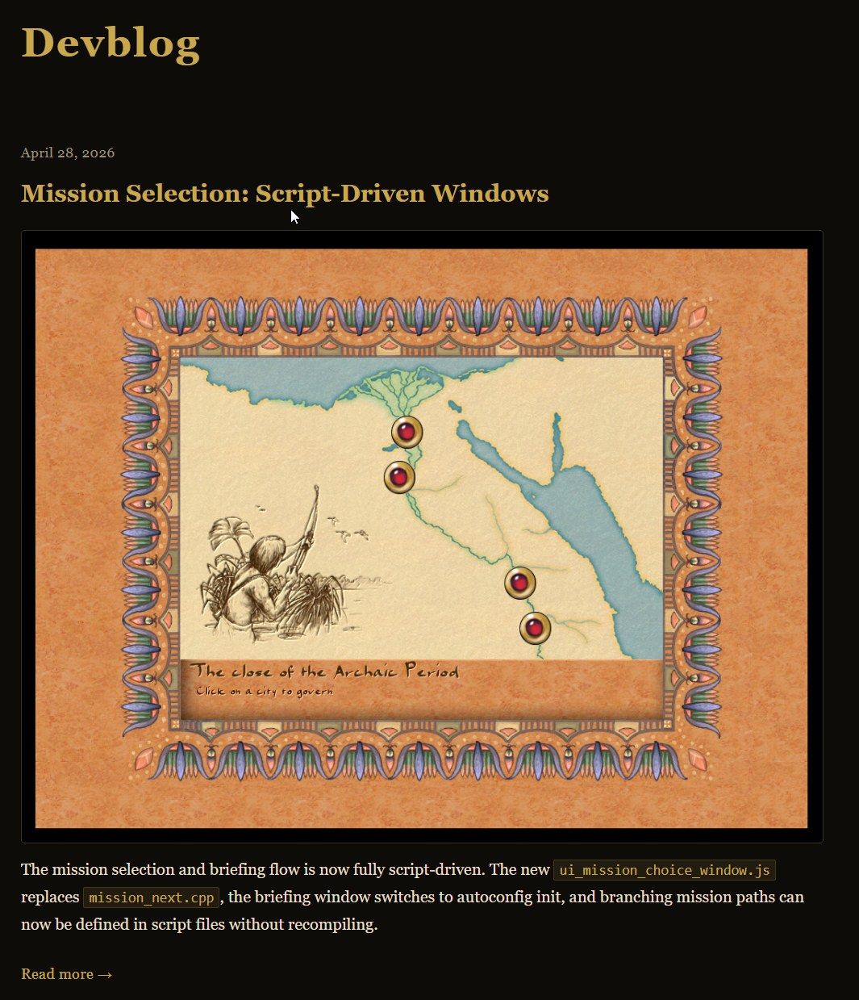

Game developers have a rather strange occupational disease: after a workday spent on tickets and code, you want to open your laptop and write code again, only now "for yourself". Most of my colleagues in the trade, having come home, spend 1+ hour to work on their own engine, or rewrite/mod a favorite/old/new/other (underline as appropriate) game, or build some library, or fix a tool that annoys everyone. I don't know — maybe it's contagious and goes around studios, or maybe it's just a piece of the creative atmosphere you carry out of the office, and it lives for a while outside that space.
It often happens that a small project that was meant for "a couple of evenings" suddenly turns into several years of your life. I've seen this many times from the outside and the inside: CorsixTH, 0AD, Akhenaten, Cytopia, StoneKingdoms (more open-source games here) — very different projects (among those I committed to), but they all clearly show one and the same thing: a pet project almost never stays "just a small thing". It either dies, or starts demanding a grown-up attitude from its author and drags along architecture, maintenance, documentation, communication with peers and with people who simply play, bug triage, releases, and unpleasant compromises.
And the main question here isn't "how to find motivation" but: do you actually need this?
With games and tools there's a rule that can save you more than one day of your life: if you can not do it, better not do it. Maybe that sounds demotivating, but at least it's honest. A pet project in gamedev rarely ends at the first prototype, and even a small library drags along testing on different compilers, examples, a README, an issue tracker, user expectations. And if it's an engine, an editor, or a reconstruction of an old game, the scale quickly becomes "industrial", sort of.
Akhenaten (Pharaoh 1999©) is exactly one of those stories for me. And while on the surface, or in Discord, it might look like "well, let's take an old game and restore/reimagine its behavior", in reality you run into more than just old code. Code can be written and changed, but understanding the old logic, reproducing the feel, and at the same time not breaking players' habits, dealing with the data, the UI, the simulation, pathfinding and its bugs — that's oh-so-not-simple. I'm not even mentioning saves and the thousand-thousand small rules that aren't properly documented anywhere, so any "simple" mechanic turns out to be a tangle of dependencies, half of which you remember differently from other people. That's what old games were like.
Weak motivation doesn't survive here, and "I want to do it for my portfolio", "I want to understand how engines work", "I want my own Unity, only simpler" can be fine initial impulses, but... but it's poor fuel for a multi-year project.
What works much better here is "I miss this myself", "I want this old game to live", "I'm curious to test my idea", "I want to make a small tool that can be embedded anywhere".
About a small tool: imspinner started after I was commissioned to make a few non-standard loading animations in C++ — someone just had that wish. It wasn't an attempt to build a game framework, or a framework at all; it's just a small, understandable, embeddable thing for Dear ImGui in the form of a set of loading indicators. It has a small boundary of responsibility, and you can understand it, use it, extend it, and not drag half the world along with it.
A pet project and learning are not the same thing
Pet projects are often justified by learning, like "I'll write my own engine to figure things out". This doesn't work. Writing an engine specifically — doesn't work. Out of roughly a thousand of my gamedev contacts, only two people have written a game engine to the state of "you can show it and poke at it" (zenkovich and his o2) and (tinaynox with Melted Kingdoms — add it to your wishlist, Dima promised me a couple of beers for the ad).
Two people out of more than a thousand, less than a tenth of a percent, and that's the usual ratio of started versus finished-"to-a-working-phase" pet projects. The problem here isn't figuring things out, it's that if you write a whole game, you'll inevitably spend more time in the areas where you already feel confident. The programmer will polish architecture and code, the artist will go into visuals, the game designer will dig into mechanics, while the weak spots will stay "for later": tooling, UI, builds, tests, the content pipeline, documentation, and so on.
On the open-source field this is very visible. That same Cytopia as a city-builder withered, because a couple of strong programmers were squeezed out of the project (not me — I only helped at the edges, but I still had to read all that madness in the chats), and then the project's author too, and new ones never came. The technical side sagged and dragged the whole development down. It's not enough to write the code; another person needs to be able to build the project in at least ten steps using halfway-readable documentation, and better yet be able to understand the structure, propose a change, and not break someone else's work in the process. And having broken it — not lose interest in the project after the first reviews.
StoneKingdoms/Augustus/Akhenaten/OpenTTD/OpenAge show the other side of development. When you work with the legacy of old games, learning very often goes, let's say, not by modern standards, and you have to study ancient formats, behavior, tools, the original's limitations, and the community's expectations. This is little like "a game-dev course, we'll write Crysis in ten days", and more like code archaeology mixed with crutch engineering and intuition training.
To learn — if you specifically want to learn — instead of a big pet project it's more useful to take a small topic and study it separately: serialization, ECS, UI layout, navigation, hot reload, localization, profiling. But small exercises have a downside: they rarely give the feeling of a finished project and the "burst of joy hormones" that appear in a live project.
Not every project has to become big
Or an engine... Newcomers who come into development now see the gamedev landscape from the shoulders of giants like Unreal/Unity/Godot/Defold and smaller fellow engine builders. And they start thinking in big categories: game, engine, editor, mechanics, NPCs. Everyone does this without exception, what can you do... we quickly got used to the good stuff. But between these broad strokes there's a huge layer of small tools and libraries, knowing which turns out to be more useful than knowing an engine as a whole.
Small libraries are good because they make you think about boundaries. What does the project do? What does it fundamentally not do? How do you plug it in? Can you use only part of it? How much does it depend on someone else's stack?
Many game pet projects suffer from the desire to immediately become a framework or an engine. The author starts with a small useful function, and a month later is already designing a plugin system, an editor, their own asset format, and a plan to "someday hook up scripts". Sometimes this is justified, but a small library with a clear API has a better chance of survival than an ambitious all-in-one with no users, joining the graveyard of all-in-ones on GitHub.
Remakes of old games are in a special position here, because they rest on specific knowledge and players' memory. You can't just replace them with a generic system and say it got better, because players feel the details and remember their impressions — like the pace of the simulation or the interface's responsiveness, the quirks of pathfinding, balance bugs, or other limitations. And here your own engine is no longer a flaw or over-engineering, but part of the spirit of the old game: you simply won't be able to reproduce all of this on Unreal, no matter how hard you try.
C++ remains an important language for gamedev (and C++17 is an absolutely rock-solid standard), especially where you need performance, memory control, and integration with existing code and platforms, but for hobby projects it has a cost, and that cost is big enough to push most newcomers away.
A lot of time goes not into the idea of the project or the game, but into the infrastructure around the language: builds, ABI, templates, dependencies, platform differences, reflection, bindings, code generation, and debugging strange errors. If a project needs properties, events, serialization, editor inspectors, or scripting, you quickly start building your own little language on top of C++.
In work and large projects C++ is justified; in a home project rarely, or only if C++ is the only thing you know. And if the project's goal isn't to explore C++ as such but to make a game or a tool, then just put the code in C++ and push it toward your favorite framework — it'll be more useful and faster. It's strange that after 20 years of coding in C++ I'm no longer sure it's an advantage in development, rather just a habit.
At the same time, small C++ libraries can still be an excellent format: that same imspinner caught on with the community precisely because it doesn't try to cover all of UI or claim the Dear ImGui ecosystem, but just complements it with something useful and solves a clear task.
Open-source adds another game on top of the game
When a project is open, you get not only code but also people. And also issues, pull requests, expectations, questions, forks, random people who show up once a year and ask why something doesn't build, and get offended if you don't answer. Often a couple of good issues or a pull request restore motivation better than any internal discipline.
But open-source easily turns into unpaid support, especially if the project looks "almost ready" while users already have product-level expectations. Open-source gamedev isn't just "let's write a game together", it's a second job. And there too you have to make decisions, set tasks, rewrite systems, and explain to newcomers what's a small task and which architectural swamp it's better not to wade into yet.
In solo projects it's easier to make decisions, but once even a small team appears, communication appears, and a lot of time is needed specifically for talking. After several such stories, I increasingly value projects with "honest" boundaries, let's call it that.
You don't have to make a game if you can make a tool for games. You don't have to make an engine if you can make a library. You don't have to... there are a lot more reasons why NOT...
Better to put it this way: a pet project lives longest when behind it stands not the desire to figure things out or build a portfolio, but a concrete lack — something you yourself are missing and that you're ready to use, and better yet when there's a small group of people nearby with the same interests and the project can be made useful not only for yourself. But once it becomes useful to someone, it also becomes a second job, where motivation, scale, and personal interest will be the only reward.
If the project won't let you go — do it, but it's better to choose in advance a form in which it can live long, because any hobby always turns out to be bigger than it seems on the first evening.
P.S. If anyone is interested in ancient-Egyptian city-building, I've started a devblog where I post changes in the game and just interesting articles.

← All articles